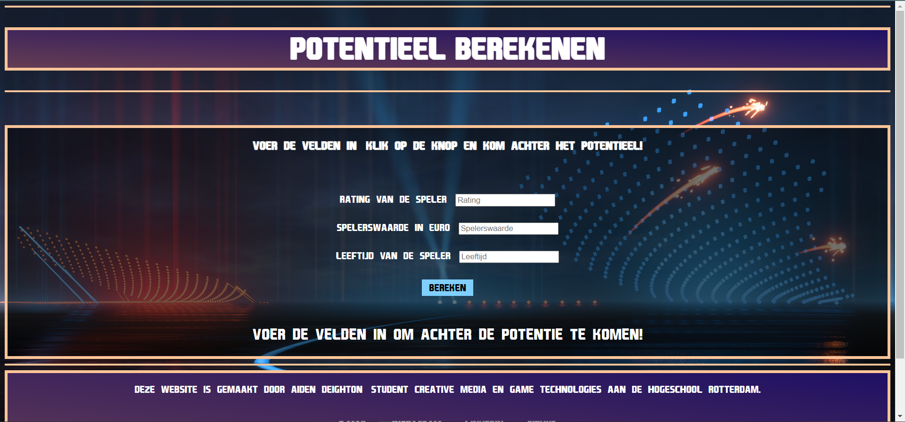
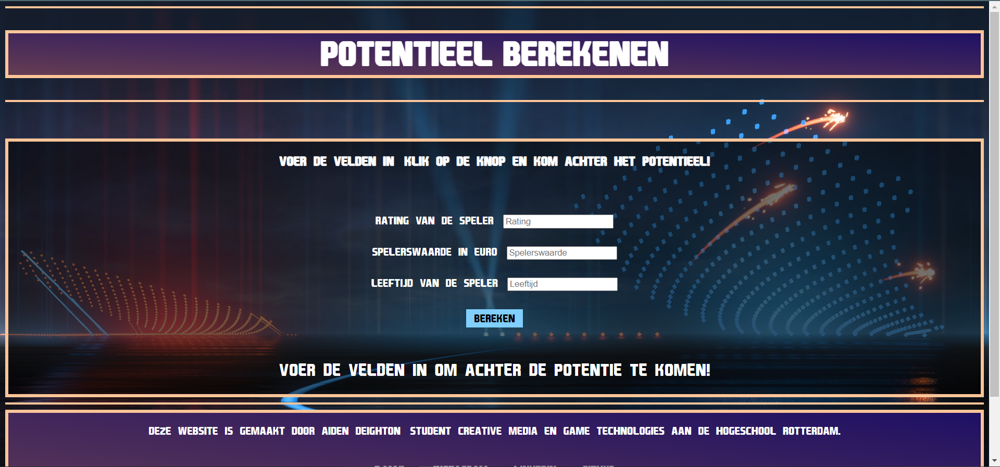

FIFA 23 Career Mode Helper
For the course Programming 8, I created a FIFA 23 Career Mode Helper that uses machine learning to assist FIFA 23 players in estimating a football player's potential and determining their most suitable in-game positions.
Using ML5, I trained my own machine learning model based on collected data. After training, I integrated the model into a JavaScript application, allowing users to input player stats and receive predictions generated by the model.
The result is a helpful tool for FIFA 23 Career Mode fans, giving them deeper insights into player development and aiding them in building stronger teams.
 

Project Context
This project was developed for the course Programming 8, where the goal was to explore machine learning concepts and create a pratical application using ML5.
The challenge involved gathering data, training a model, validating the results, and integrating the trained model into a working JavaScript interface. The tool needed to be functional, user-friendly, and demonstrate how machine learning can be used.
My Role
I was responsible for the full development of the tool, including training the ML5 model, preparing the training data, and implementing the application logic in JavaScript.
I built the system that loads the trained model, processes user input, and generates predictions for both player potential and optimal playing positions.
Throughout the project, I gained experience with machine learning fundamentals, model training workflows, and integrating ML models into front-end applications.